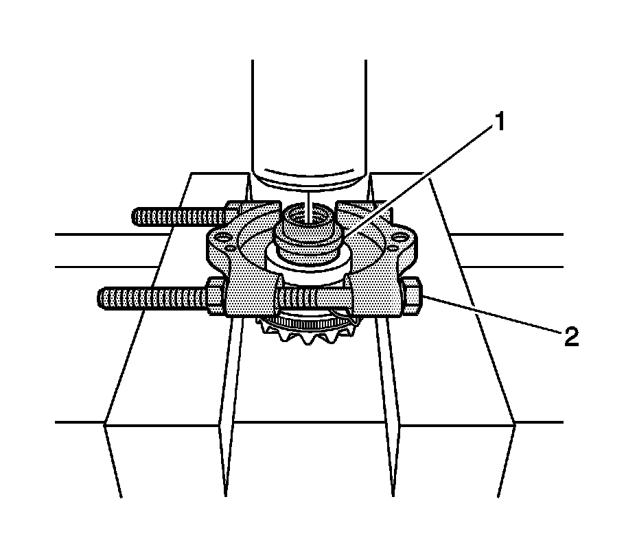
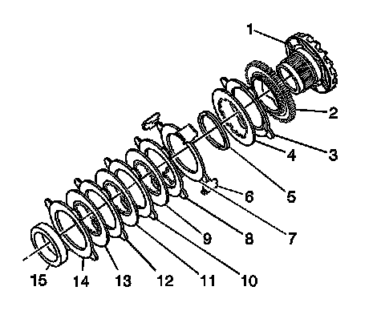

Locking Differential Cam Unit Disassemble (9.5 Inch Axle)
Locking Differential Cam Unit Disassemble (9.5 Inch Axle)
Tools Required
^ J 22912-O1 Split Plate Bearing Puller
^ J 45232 Differential Bearing Adjuster Needle Bearing Installer - LH
1. Measure and record the overall length of the gear assembly from the front of the gear to the thrust sleeve, including the side gear thrust washer.
2. Remove the guide clips.

3. Remove the thrust sleeve using the J 22912-O1 (2) and the J 45232 (1), if necessary, and a hydraulic press.

4. Disassemble the locking differential side gear cam unit and clutch disc assembly as follows:
1. Remove the clutch discs and the splined discs (7-14).
2. Remove the wave washer (5).
3. Remove the fuse disc (4).
4. Remove the carbon eared disc (3).
5. Disassemble the cam plate (2) from the cam side gear (1).